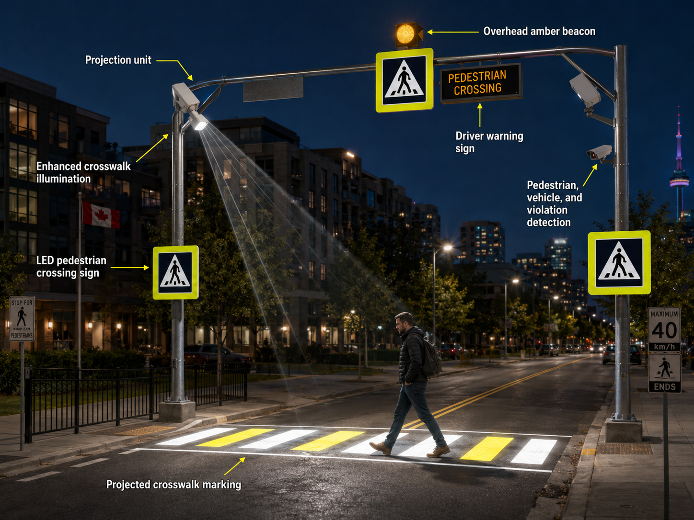

Field hardware setup
Projection unit, detection hardware, LED signs, beacon, illumination, pole infrastructure, and connectivity had to be understood as one field system.
PM signal: readiness visibility across physical installation dependencies.
How I led implementation governance across recovery, technical workstreams, sponsor visibility, QA readiness, pilot logic, and commercial-scale transition in a smart-infrastructure environment.
This case is included because it shows implementation PM behavior around a real field system: readiness, risk, dependencies, sponsor decisions, and scale-transition control.
The project sat inside a transportation-safety and smart-infrastructure implementation context where field reliability, stakeholder visibility, installation readiness, and measurable deployment outcomes mattered. My value was not engineering authorship; it was converting technical uncertainty into delivery controls: workstream readiness, issue and risk visibility, sponsor-facing status, pilot-readiness logic, and scale-transition discipline.
The implementation environment included AI-enabled pedestrian, vehicle, and micromobility detection; warning components; projected road-marking visibility; lighting and signage elements; V2I-readiness considerations; and integration logic for Smart City / ITS environments.
I use the visual only to show the field-system context. The delivery chain below is built as live HTML text, not a raster image, so it stays readable on desktop and mobile.

Expand technical system viewComponent-level view: projection unit, illumination, signs, beacon, warning display, and detection hardware.This is the same delivery logic as the previous visual artifact, but expressed as readable web content.
Projection unit, detection hardware, LED signs, beacon, illumination, pole infrastructure, and connectivity had to be understood as one field system.
PM signal: readiness visibility across physical installation dependencies.
Pedestrian, vehicle, and micromobility detection behavior had to be validated against real movement patterns and field conditions.
PM signal: make detection behavior testable, reviewable, and issue-trackable.
Warnings, projected road marking, enhanced illumination, and driver-facing signals had to respond as one safety workflow.
PM signal: connect technical behavior to user-visible response and safety context.
Pilot readiness depended on night conditions, weather exposure, traffic complexity, visibility, and testable field scenarios.
PM signal: separate test-ready work from risk-exposed work.
Issues, defects, readiness gaps, risks, and decision points had to be visible enough for sponsor review.
PM signal: turn technical uncertainty into status, ownership, and decision gates.
The delivery path had to move from recovery and validation toward rollout readiness and operational support.
PM signal: connect pilot evidence to scale-transition discipline.
I worked through reliability and readiness gaps across several technical streams: detection behavior, field hardware, QA validation, integration dependencies, and sponsor-controlled decisions. The operating need was a clear governance layer showing what was ready, blocked, decision-dependent, or exposed to field-condition risk.
The visual proof artifacts on this page are context tools: they explain the system environment I coordinated around while keeping my role framed as delivery leadership and implementation governance.
Kept hardware, software, QA, field constraints, and sponsor decisions visible as one implementation picture.
I kept the delivery view organized around the technical streams that had to become ready together. This is the PM signal: I did not need to own each engineering decision to make the system governable.
I helped turn technical readiness into a controlled pilot-readiness view: what could be tested, what needed mitigation, what carried field exposure, and what sponsors needed to approve across field conditions such as unregulated crossings, school zones, limited-visibility areas, transit stops, and other high-risk locations. The value was separating test-ready work from risk-exposed work.
I use this section to show the delivery signal I can defend directly: workstream visibility, readiness tracking, sponsor governance, QA coordination, iterative delivery control, and scale-transition discipline.
I coordinated cross-functional delivery visibility as work moved from recovery into validation and scale-transition planning.
I supported iterative delivery control under sponsor-facing governance and readiness review.
Detection behavior, field hardware readiness, event logic, integration, pilot readiness, and sponsor governance had to move together.
I helped separate test-ready work from risk-exposed work so sponsor decisions could be made on readiness evidence.
I used issue, risk, dependency, milestone, and decision visibility to keep delivery controllable.
The case demonstrates delivery leadership around a technical field system without claiming engineering authorship.
I use this case to show fit for technical implementation environments where delivery depends on cross-functional coordination, sponsor visibility, readiness gates, risk control, field-readiness evidence, and conversion of technical uncertainty into executable decisions.
My contribution was delivery leadership and implementation governance. I coordinated readiness, risks, QA visibility, pilot logic, sponsor-facing decisions, and scale-transition dependencies around a technical field system. Engineering design of the AI model, hardware architecture, and computer-vision algorithms sat with the technical team.
I use this case to demonstrate delivery leadership in a technical implementation environment with real field-readiness pressure: cross-functional workstream coordination, readiness tracking, sponsor governance, risk visibility, transportation-safety implementation context, ITS dependencies, and controlled transition from recovery into pilot validation and scale evidence.